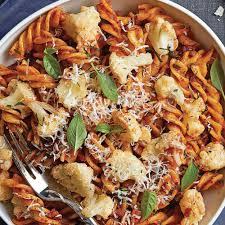

¡Bienvenidos a Pastels and Cookies! Nos alegra que hayas llegado a nuestro rincón dulce
donde la creatividad y el sabor se unen en cada receta. Aquí encontrarás una variedad de deliciosos pasteles, galletas y más, pensados para hacer tus momentos especiales aún más memorables. Ya seas un panadero experimentado o estés dando tus primeros pasos en la repostería, nuestras recetas detalladas y consejos útiles te guiarán para que cada creación sea un éxito. ¡Prepárate para endulzar tu vida con Pastels and Cookies!
Pasta con Macarrones al Queso
Para preparar unos deliciosos macarrones al queso, cocina 400 g de macarrones en agua con
sal hasta que estén al dente, escúrrelos y resérvalos. Derrite 2 cucharadas de mantequilla en una cacerola,
añade 2 cucharadas de harina y cocina 2 minutos. Agrega 2 tazas de leche poco a poco,
batiendo hasta que espese. Reduce el fuego y añade 1 taza de queso cheddar y 1/2 taza de parmesano,
removiendo hasta que se derritan. Sazona con sal, pimienta y, si deseas, 1/2 cucharadita de mostaza en polvo.
Mezcla los macarrones con la salsa, transfiérelos a una fuente de horno y, si quieres gratinarlos,
espolvorea 1/4 de taza de pan rallado por encima. Hornea a 180°C durante 15-20 minutos hasta que esté dorado y burbujeante. ¡Disfruta de tus macarrones al queso!

Pastel de chocolate
Para preparar un delicioso pastel de chocolate, precalienta el horno a 180°C (350°F) y engrasa un molde redondo.
En un bol grande, mezcla 1 y 3/4 tazas de harina, 1 y 1/2 tazas de azúcar, 3/4 de taza de cacao en polvo,
1 y 1/2 cucharaditas de polvo de hornear, 1 y 1/2 cucharaditas de bicarbonato de sodio y una pizca de sal. Añade 2 huevos,
1 taza de leche, 1/2 taza de aceite vegetal y 2 cucharaditas de extracto de vainilla, batiendo hasta obtener una mezcla homogénea. Incorpora 1 taza de agua hirviendo, mezclando bien (la masa estará líquida). Vierte la masa en el molde y hornea durante 30-35 minutos, o hasta que un palillo insertado en el centro salga limpio. Deja enfriar antes de desmoldar y cubre con tu glaseado favorito. ¡Disfruta de tu delicioso pastel de chocolate!
Cookies
Para preparar unas deliciosas galletas con chispas de chocolate, precalienta el horno a 180°C (350°F)
y forra una bandeja para hornear con papel pergamino. En un bol grande, bate 1 taza de mantequilla a temperatura ambiente con 1 taza de azúcar moreno y 1/2 taza de azúcar blanco hasta obtener una mezcla cremosa. Añade 2 huevos y 2 cucharaditas de extracto de vainilla, mezclando bien. En otro bol, tamiza 3 tazas de harina, 1 cucharadita de bicarbonato de sodio y 1/2 cucharadita de sal. Incorpora gradualmente los ingredientes secos a la mezcla húmeda hasta combinar. Agrega 2 tazas de chispas de chocolate y mezcla bien. Forma bolitas de masa y colócalas en la bandeja, dejando espacio entre ellas. Hornea durante 10-12 minutos, o hasta que los bordes estén dorados. Deja enfriar en la bandeja por unos minutos antes de transferirlas a una rejilla para enfriar completamente. ¡Disfruta de tus galletas con chispas de chocolate!